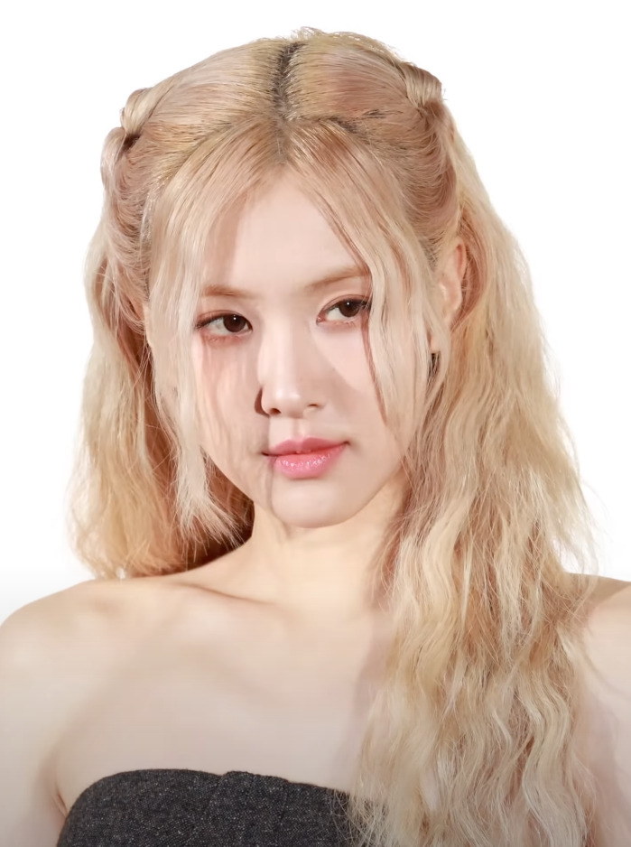
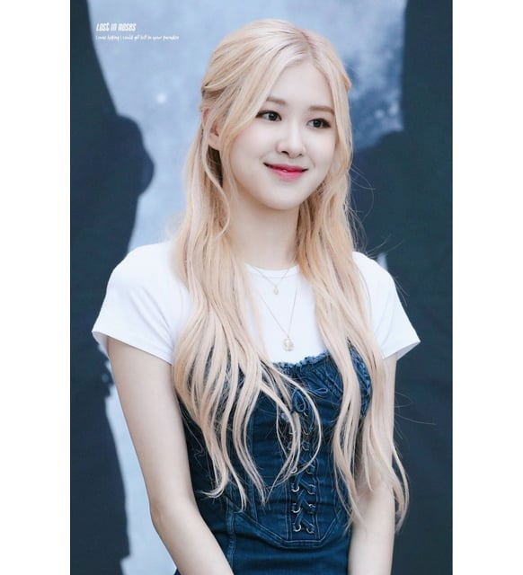
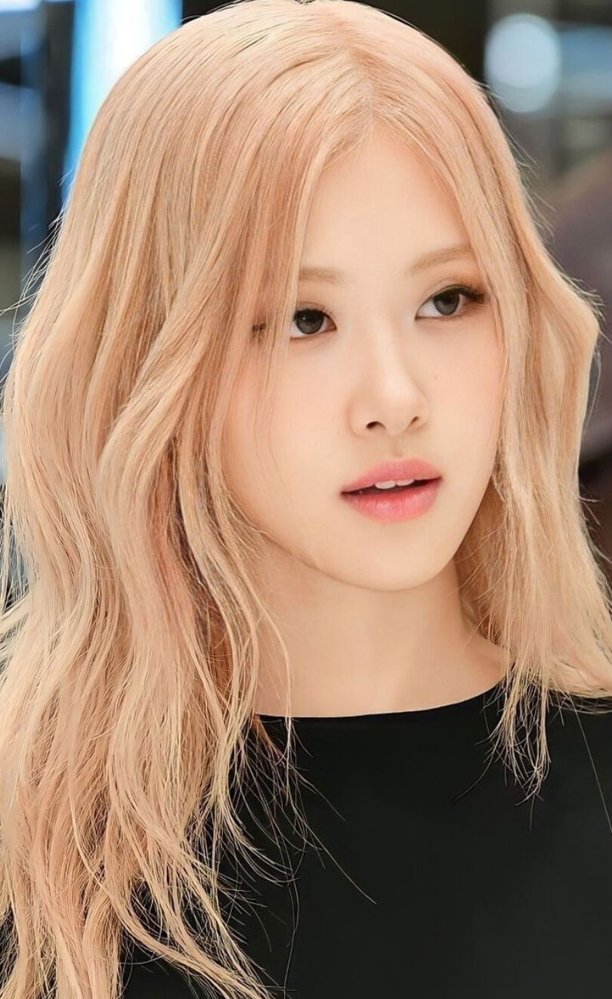

BEST FAMALE
K-POP GROUP
● ●


Profil

Penghargaan
Album
R (Single Album - 2021): Featured two tracks: "On the Ground" and "Gone". "On the Ground" became the first song by a K-pop solo artist to top the Billboard Global 200. Rosie (Studio Album - 2024): Pre-release Singles: "APT." (feat. Bruno Mars) and "Number One Girl". Lead Single: "Toxic Till the End".Labels: The Black Label and Atlantic RecordsGenre: Pop, Pop-Punk, Alternative Pop, Synth-Pop, R&B.
Kesedihan dan Kesenangan Yang Terkandung